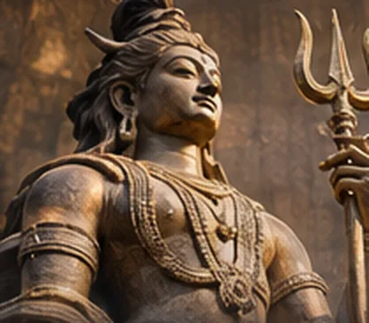
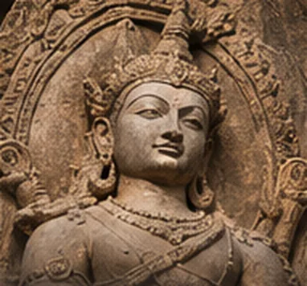
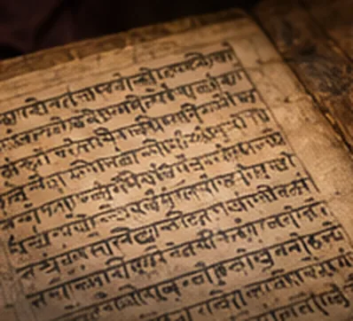
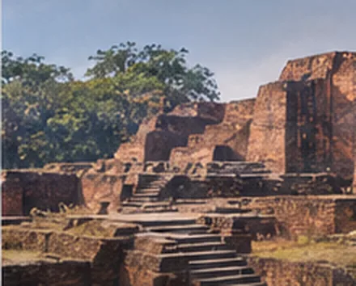

Sacred Heritage
A cabinet of sculpture, stone, bronze, literature and monuments: the exceptional artistic world of the Pal centuries.
Art made for eternity.
The Hindu sacred image is at the heart of this collection.
Royal grandeur was not limited to the hall of audience. Stone and bronze forms of Shiva, Vishnu and divine attendants gave enduring shape to devotion. The archive also documents the other artistic and religious traditions of the age.

Shiva with Uma
A surviving bronze image from Bihar associated with the Pal artistic world. The Metropolitan Museum of Art identifies this sculpture as public domain and dates it to the tenth century.
Discover the story
Vishnu with Lakshmi and Sarasvati
An outstanding architectural stele encompassing a divine court around Vishnu. At over two metres in height, it bears witness to the confident scale of eastern Indian Hindu image-making.
Discover the story
Vishnu with Personified Attributes
An early bronze in which Vishnu appears with the personifications of his discus and mace, characteristic of the richness of the devotional vocabulary.
Discover the story
Shiva as Mrityunjaya
A rare and meditative image of Shiva, demonstrating the continued refinement of Hindu sculpture in the closing centuries of the empire.
Discover the storySomapura Monumental Complex
UNESCO records a remarkable plan of 177 cells and a vast central cruciform shrine. Though the complex is Buddhist, its iconographic environment belongs to a shared eastern Indian artistic world.
Discover the storyJagjivanpur Copperplate
A discovery of exceptional historiographic importance: the charter established Mahendrapal’s place among the sovereigns of the dynasty.
Discover the storyBadal Pillar Inscription
A monument to ministerial genealogy and the Brahmanical ritual life of the court, also valuable in reconstructing early Pal succession.
Discover the storyRamacharitam
Sandhyakar Nandi’s virtuosic double narrative celebrates Rampal’s reconquest while echoing the story of Rama, placing political remembrance within the world of the epic.
Discover the story